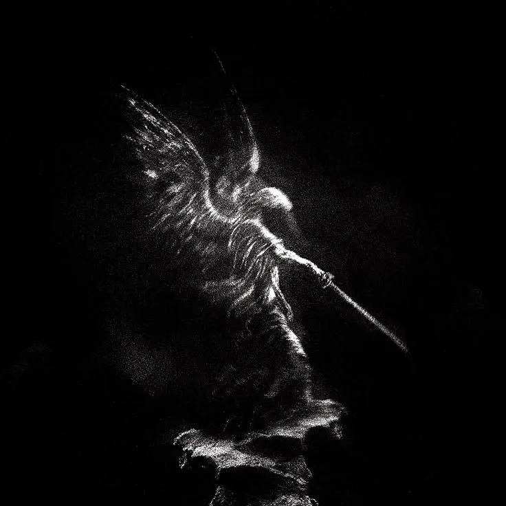
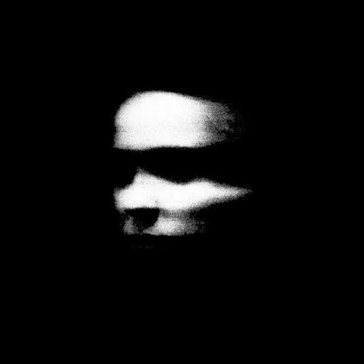
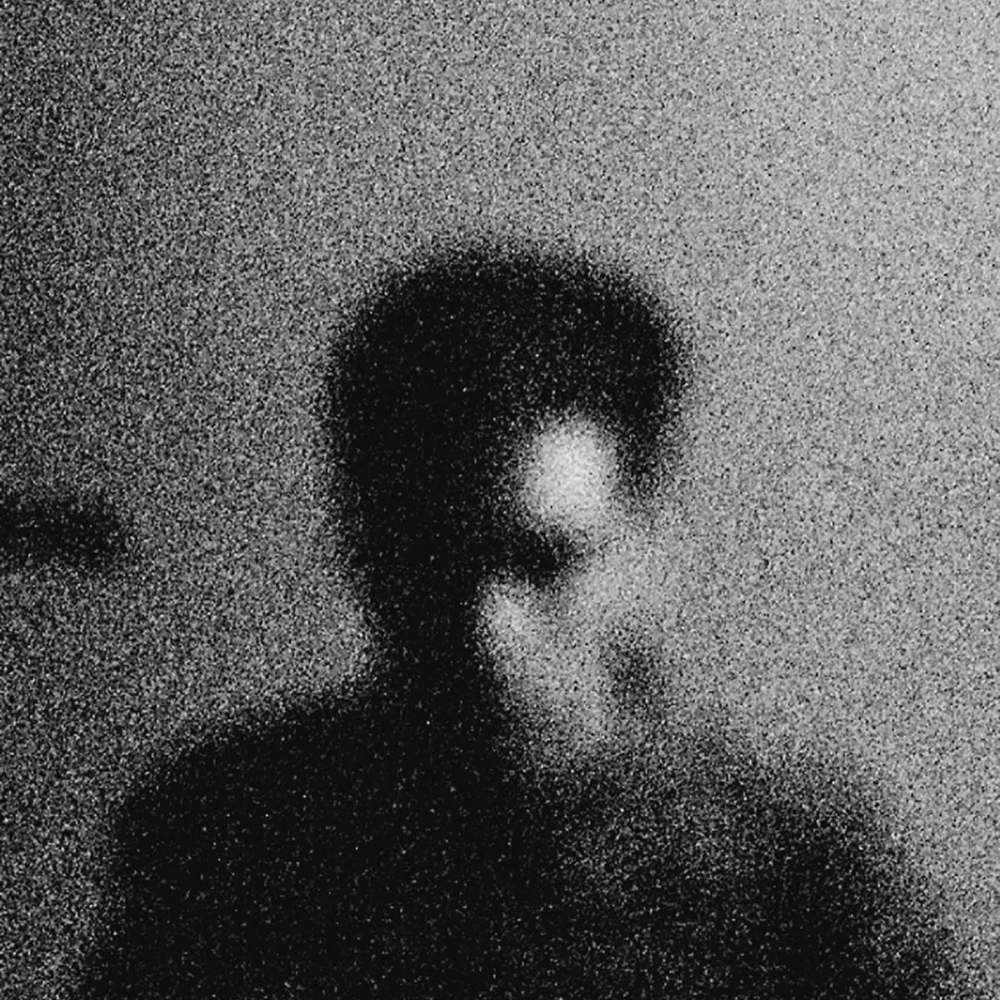

Identity / Poster series
Angelistic
A visual language that reads as sacred and dangerous at once.
- Category
- Identity
- Role
- Concept, art direction, illustration
- Format
- Poster series
- Year
- 2026
The idea
Sacred.
Armed.
One figure. One light. One red accent. Every poster works alone — louder as a set.




Next project